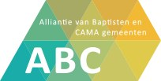
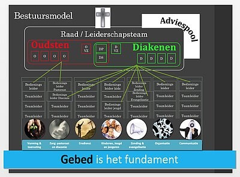
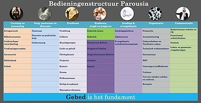

Onze gemeente is aangesloten bij het kerkverband van ABC-gemeenten, en heeft via dit verband de zogeheten ANBI-status: wij zijn een Algemeen nut beogende instelling. Deze status heeft als gevolg dat uw giften aan onze gemeente (onder voorwaarden) aftrekbaar zijn bij uw belastingaangifte. Meer hierover kunt u lezen op de website van de Belastingdienst.
Om aan de ANBI-status te (blijven) voldoen, moeten we enkele gegevens publiceren. Deze vindt u hieronder.
A. Algemene gegevens
| Naam | Evangelische Gemeente CAMA Parousia Zoetermeer | |
| Telefoon | 079-3478548 (receptie) | |
| RSIN | 807001296 | |
| KvK-nummer | 65436334 | |
| Website adres | www.parousiazoetermeer.nl | |
| secretaris@parousiazoetermeer.nl | ||
| Gebouw | De Uitkijk | |
| Adres | Wattstraat 64 | |
| Postcode | 2723 RD | |
| Plaats | Zoetermeer |
Betekenis van onze naam
Het Griekse woord Parousia betekent zowel ‘Aanwezigheid’, ‘Tegenwoordigheid’, als ‘Komst’. We drukken ermee uit dat we geloven dat Christus aanwezig is in zowel ons leven als in onze samenkomsten. En daarnaast dat we leven vanuit de verwachting dat Jezus Christus als Persoon zal terugkomen op aarde. We zien uit naar Zijn (weder)komst!
Zendingsgemeente
Parousia Zoetermeer is een CAMA-gemeente wat staat voor Christian And Missionary Alliance. Op dit moment kent CAMA zo’n 1100 zendelingen, werkzaam in 45 verschillende landen. Ze streven er altijd naar, zelfstandige en zendingsbewuste gemeenten te stichten met een groot hart voor de verkondiging van het Evangelie, wereldwijd en in eigen land. Ook Parousia Zoetermeer heeft uit de eigen gelederen tal van zendelingen mogen uitzenden, onder andere naar Afrika, Azië en Oost-Europa. Op de zendingspagina van onze website kunt u kennis met hen maken.
ABC-Gemeente

De Nederlandse CAMA-gemeenten zijn op 12 oktober 2006 gefuseerd met de Broederschap van Baptistengemeenten. We vormen nu gezamenlijk de Alliantie van Baptisten en CAMA-gemeenten (kortweg: ABC-gemeenten). Dit verband startte met 52 gemeenten en wordt geleid door een bestuur van zeven personen.
B. Visie en missie
Gods liefde is voor iedereen. Dat is de visie van Parousia Zoetermeer!
God heeft zijn Zoon Jezus Christus naar de wereld gezonden om voor ons te sterven. Door Hem ontvangen we vergeving voor onze zonden en worden wij in de vrijheid gesteld. Het enige wat wij daarvoor moeten doen is dit geschenk in geloof aannemen (Joh.3:16).
Onze missie is om onze naaste over Gods liefde te vertellen. Deze prachtige boodschap geeft hoop voor de toekomst in een wereld die lijkt te worden beheerst door hebzucht, onrecht en geweld, verwarring en gebrokenheid.
Wij zien het als onze taak om Gods liefde in woord en daad bekend te maken en te bouwen aan zijn Koninkrijk, waarin liefde, vrede en recht het laatste woord zullen krijgen. En waarin onze Koning Jezus Christus op een dag voor eeuwig zal regeren. Door te werken aan liefdevolle relaties worden de contouren van dit Koninkrijk nu al zichtbaar.
De kernbegrippen van onze visie en missie zijn:
a) prediking van het evangelie
b) omzien naar de niet-gelovige mens
c) toerusting van gelovigen
d) dienen in een wereld vol nood
e) God in alles eren
Elk jaar geven wij onze visie een bijzonder thema en invulling.
C. Bestuur van de gemeente
De Parousiagemeente Zoetermeer wordt bestuurd door een leiderschapsteam (LT) dat gezamenlijk de verantwoordelijkheid draagt voor het vertalen van de visie en de missie naar het beleidsplan waarin de verschillende bedieningen verder vorm krijgen.
Dit bestuur is samengesteld uit een wisselend aantal oudsten (waaronder één voorganger) en diakenen. Op de pagina 'Samenstelling van het leiderschapsteam' kunt u vinden uit welke personen het bestuur op dit moment bestaat.
Voorts wordt dit team ondersteund door een adviespool van (vrijwillige) deskundigen. De bestuursstructuur wordt in een schema weergegeven.

D. Beleidsplan
Overeenkomstig de statuten van de CAMA Gemeente Zoetermeer, richt het beleid zich op de vertaling en de uitvoering van de hiervoor beschreven visie en missie. Dit beleid wordt ook geformuleerd in artikel 3 van de Statuten van ABC Gemeenten, waarmee wij ons verbonden weten.
De concrete uitwerking van de visie en de missie vindt plaats binnen tal van activiteiten (bedieningen genoemd) die deels door beroepskrachten en verder voornamelijk op vrijwillige basis door gemeenteleden worden ingevuld. Dit vindt plaats binnen een zevental bedieningsvelden (zie schema bedieningenstructuur hieronder).
Op de website van de gemeente worden de afzonderlijke bedieningen nader beschreven.

E. Beloningsbeleid
De Evangelische Gemeente CAMA Parousia Zoetermeer heeft momenteel twee betaalde medewerkers: een voorganger en een bedieningsleider jeugd. Met hen is een arbeidscontract afgesloten. Voor de vaststelling van de hoogte van het loon wordt de cao Welzijn en Maatschappelijke dienstverlening als referentiekader gebruikt.
F. Verslag activiteiten
De CAMA Gemeente Zoetermeer heeft tijdens het afgelopen jaar activiteiten ontwikkeld, die dienstbaar waren aan de voornoemde doelstellingen. Dit gebeurde door de stimulerende wekelijkse samenkomsten, Bijbelstudiegroepen, jeugdevenementen, kinderwerk, pastoraal werk en het stimuleren van onderlinge contacten.
G. Standaardformulier publicatieplicht kerkgenootschappen
Via onderstaande link vindt u een link naar ons Standaardformulier publicatieplicht Kerkgenootschappen van de Belastingdienst over het afgelopen boekjaar.